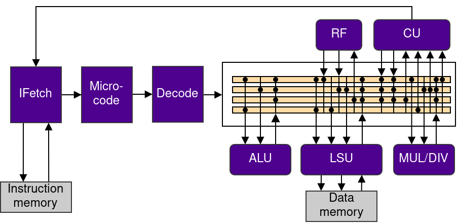
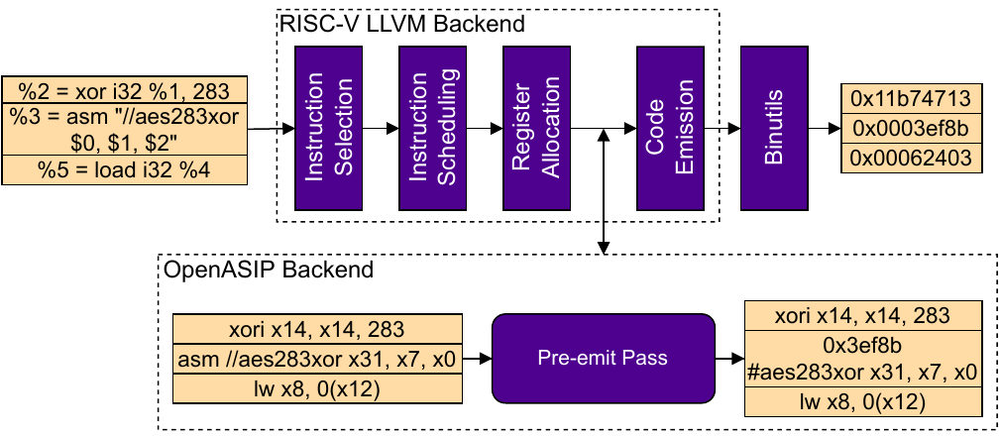

OpenASIP 2.0
OpenASIP 2.0 is now out! See the release announcement, change summary and README. In addition to support for LLVM 15, we added new experimental support for the RISC-V ISA, as well as a new hardware generation tool that enables swift generation of customized function units. Learn more by completing the RISC-V tutorial that is described in the OpenASIP manual!
LLVM 15
With the new release, we added support for LLVM 15. Due to the switch to opaque pointers in LLVM 15, we consider the support for the previous LLVM version 14 "best-effort" and recommend that you use OpenASIP together with LLVM 15. When ugrading to the 2.0 release of OpenASIP, you will have to either get a fresh clone of the repository or run "make distclean" and the normal installation steps described in README. This approach guarantees that your compiled newlib is compatible with the new LLVM IR changes.
There is also a known issue that occurs when having multiple OpenASIP installations on the system. Please see following issue: https://github.com/cpc/openasip/issues/91.
RISC-V Support
Even with the rising popularity of the RISC-V ISA, all available co-design toolsets for RISC-V ASIPs are proprietary which prevents the open source community from freely using and modifying them for their own purposes. In addition, the TTA template used in OpenASIP toolset is very flexible for describing other more high-level architectures which enabled to reuse many parts of the toolset for RISC-V customization. These were the driving factors for adding support for the RISC-V ISA into the OpenASIP toolset.
Microarchitecture
To implement the RISC-V ISA, we wanted to choose a microarchitecture that enables the reuse of the TTA-based toolflow. This approach lead us to use a TTA as the internal microarchitecture together with a microcode unit that translates and sequences TTA micro-operations from RISC-V input stream during run time. With this approach, we were able to reuse the toolflow without inducing any significant hardware overhead from the control logic.

Custom instructions
The option to add custom instruction set extensions makes RISC-V an interesting ISA for customized processors. In OpenASIP, the user can add custom instructions to the processor description. This enables to invoke them with generated intrinsic templates from C-code as well as to generate the processor hardware that implements the custom instructions.
Compilation of programs with RISC-V custom instructions is implemented by utilizing the LLVM project. In addition to Clang and LLVM IR optimizer, we use upstream LLVM RISC-V backend and process custom instruction intrinsics as a pre-emit pass. In the pre-emit pass, custom instruction intrinsics are replaced with an instruction binary based on the processor description. This enables to support custom instructions without regenerating and compiling the compiler backend and bintools.

Function Unit Generator (FUGen)
To make design space explaration faster, we added a new tool to the OpenASIP toolset called "Function Unit Generator" (FUGen). This tool utilizes the Directed Acyclic Graph (DAG) based operation descriptions used in the toolset and automatically generates the matching VHDL/Verilog description of the function unit. Before, custom function units had to be written by hand which is unoptimal if the design must be optimized after acquiring post-synthesis results such as timing information. Read more about the operation description formats in the operation set customization paper.
FUGen works by chaining operation descriptions that are found in OSAL to match the DAG based operation description. In addition, the operations can be described by HDL-snippets that only describe the operation behaviour and leaves the generation of the operation pipeline to FUGen. With FUGen, the user can rapidly optimize the function unit implementation by, for example, changing the pipeline information in the processor description.
Publications
Read more about the microcode structure and the RISC-V customization support in the following publications:
K. Hepola, J. Multanen and P. Jääskeläinen, "OpenASIP 2.0: Co-Design Toolset for RISC-V Application-Specific Instruction-Set Processors", 2022 IEEE 33rd International Conference on Application-specific Systems, Architectures and Processors (ASAP), 2022, (PDF available)
K. Hepola, J. Multanen and P. Jääskeläinen, "Dual-IS: Instruction Set Modality for Efficient Instruction Level Parallelism", 35th GI/ITG International Conference on Architecture of Computing Systems (ARCS), 2022, (PDF available)